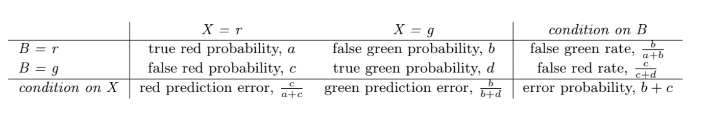
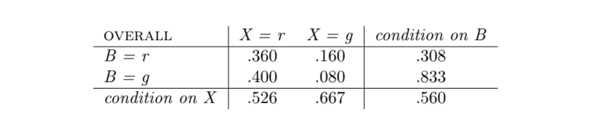
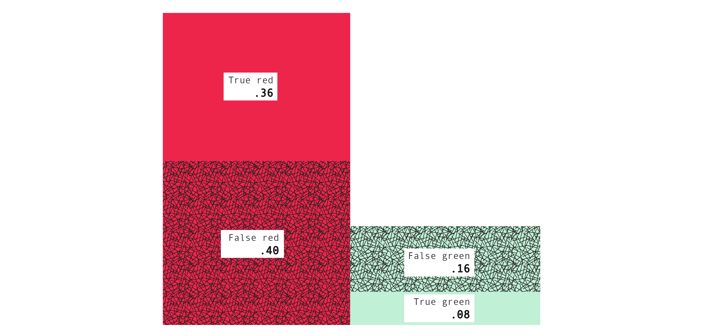
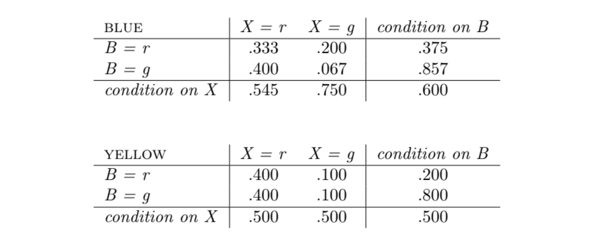
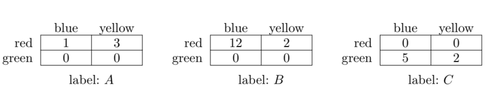
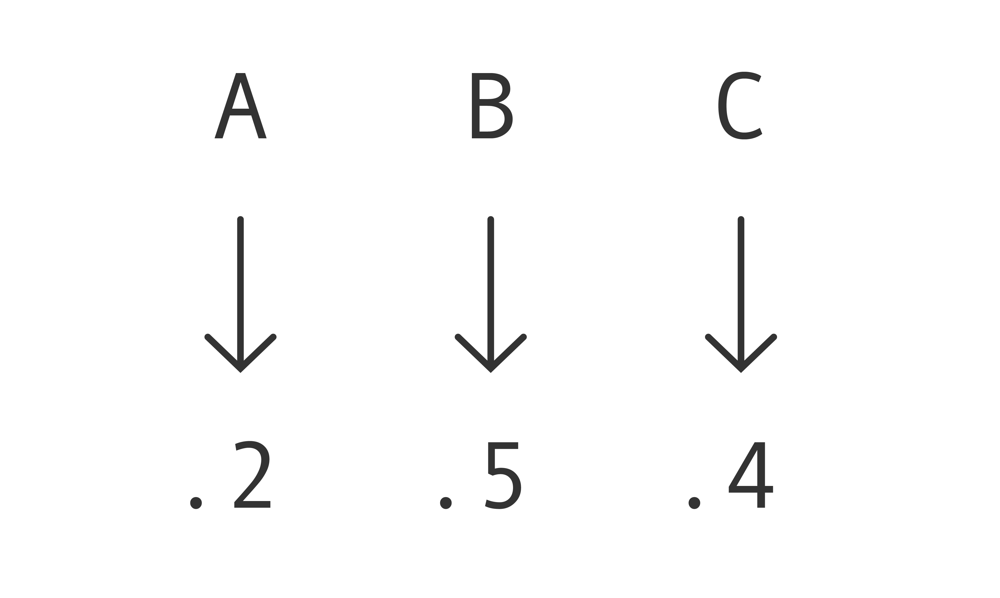
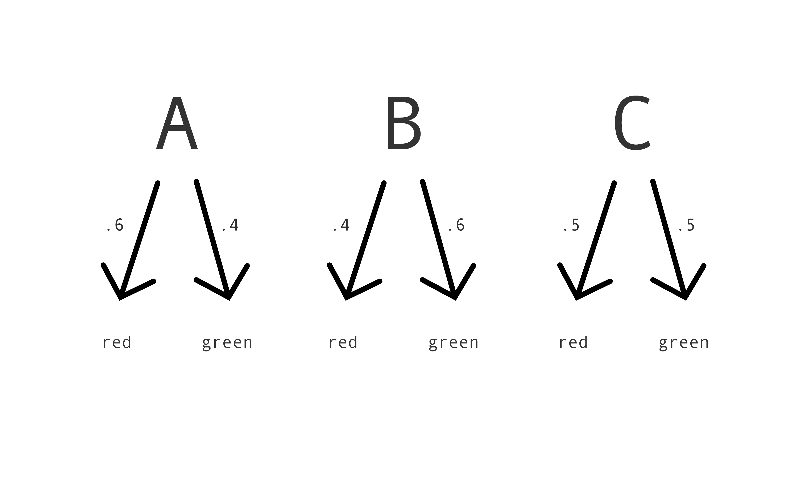
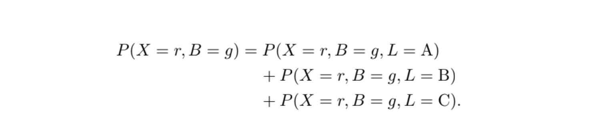
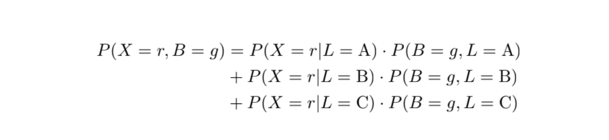
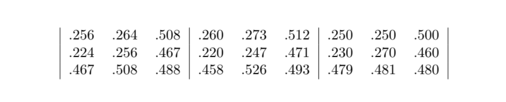

The Allegheny Family Screening Tool is a computer program that predicts whether a child will later have to be placed into foster care. It's been used in Allegheny County, Pennsylvania, since August 2016. When a child is referred to the county as at risk of abuse or neglect, the program analyzes administrative records and then outputs a score from 1 to 20, where a higher score represents a higher risk that the child will later have to be placed into foster care. Child welfare workers use the score to help them decide whether to investigate a case further.
Travel search engines like Kayak or Google Flights predict whether a flight will go up or down in price. Farecast, which launched in 2004 and was acquired by Microsoft a few years later, was the first to offer such a service. When you look up a flight, these search engines analyze price records and then predict whether the flight's price will go up or down over some time interval, perhaps along with a measure of confidence in the prediction. People use the predictions to help them decide when to buy a ticket.
compas is a computer program that predicts whether a person will go on to commit a crime. It's widely used in the justice system in the United States. When someone is arrested in a jurisdiction that uses the program, prison staff input information about them and then compas outputs a score from 1 to 10, where a higher score represents a higher risk that they'll go on to commit a crime. In some states, judges use the scores to help them make decisions about bond amounts, sentencing and parole.
The Allegheny Family Screening Tool, flight price forecasts and compas are examples of automated prediction tools. Such tools are becoming more and more common in all sorts of fields: from healthcare to the criminal justice system, from education to sports analytics, from social services to shopping. They typically go hand in hand with big data, machine learning and AI.
On the one hand, you might hope that using automated prediction tools will lead to better predictions: more accurate, because based on huge datasets; more accountable, because arrived at by explicit calculation; more fair, because free of human biases. Just as AlphaGo plays better Go than any person, so too will automated prediction tools make better predictions than any person --- or so you might hope.
On the other hand, you might worry that using these tools will lead to worse predictions: less accurate, because using fixed and ill-chosen criteria; less accountable, because the details are proprietary or opaque; less fair, because reflecting the biases of the dataset and the designers. Just as people are better at writing jokes or doing cryptic crosswords than any program, so too with making predictions --- or so you might worry.
| Criteria | White | African American |
|---|---|---|
| score was 5-10 but didn't go on to commit a crime | 23.5% | 44.9% |
| score was 1-4 but did go on to commit a crime | 47.7% | 28.0% |
To think through the results, we’ll use a clean and clear abstraction: crate-and-boxes problems. The abstraction, free from distracting complexities, will help us think, in general, about how predictions can generate statistics like ProPublica’s. A crate-and-boxes problem works like this:
To specify a particular crate-and-boxes problem, we need to specify which boxes are in the crate. For example, we need to specify how many boxes are labeled A and contain a red ball and a blue cube, how many boxes are labeled B and contain a green ball and a yellow cube, and so on. We can specify all these things concisely using frequency tables. For each color of ball (red or green), each color of cube (blue or yellow) and each label, the tables have an entry telling us how many boxes of that kind are in the crate. For example:
The frequency tables specify a particular crate-and-boxes problem because they specify which boxes are in the crate. The number of boxes labeled A and contain a red ball and blue cube are displayed in the first table's upper left quadrant. Boxes which are labeled B and contain a green ball and a yellow cube are displayed in the second table's lower right quadrant. And so on.
From this, we can infer other information. For example: we can sum up all the numbers in the tables to arrive at the number of boxes in total; we can sum up just the numbers in the first table for boxes labeled A; just the numbers in the second table in the first row for boxes labeled B and containing a red ball; sum up just the numbers in the the third table's second column for boxes labeled C and containing a yellow cube.
This particular crate-and-boxes problem will be our running example. We'll get to know it well.
Crate-and-boxes problems are odd. Why bother thinking about them? Because they're clear and simple models of problems we care about, problems which come up all over the place in practice.
For example, take the problem of predicting whether people will commit a crime, which is the problem compas tries to solve. Here's the abstract structure:
Problems having that abstract structure come up all over the place. Take industrial quality control: You predict whether a product is defective (class) on the basis of its dimensions (features), where some products are produced in the night-shift and some in the day-shift (group). Or a job application: You predict whether an applicant will do well at the company (class) on the basis of their performance on a test (features), where some applicants are men and some are women (group). Or medical diagnosis: You predict whether a patient has a disease (class) on the basis of their symptoms (features), where some patients are over and some under fifty (group). And so on, and on, and on. Problems like these are everywhere.
All of them can be modeled by crate-and-boxes problems. To spell out the model:
| crate-and-boxes problem | in the abstract | example: compas |
|---|---|---|
| boxes color of ball: red or green color of cube: blue or yellow label |
objects class: positive or negative group: 0 or 1 features |
people will commit crime: yes or no race: white or black results of questionnaire |
Because crate-and-boxes problems model all these practical problems, results proved about crate-and-boxes problems apply to these practical problems too. In addition, thinking about crates and boxes is easier than thinking about the practical problems, as we'll see. That's why it's worth thinking about them.
How does probability come into the picture in all this? In practical problems, probability can come into the picture in several ways. I'll give two examples.
First, the feature, class or group of an object might be a probabilistic matter, like the outcome of a coin flip. Suppose I'm playing blackjack, say. You predict whether I'll win a hand (class) on the basis of the face-up cards (features), where sometimes I'm dealt a royal card and sometimes not (group). In this case, all three things --- feature, class, group --- are probabilistic. Of course, either I'll win or I won't, either the face-up cards will be these or those or so on, and either I'll be dealt a royal card or not. But more can be said: about the probabilities of winning, of the face-up cards, of being dealt a royal card. To represent the problem, you should represent the probabilities in your model.
Second, even if the problem itself is not probabilistic, you might be uncertain about it --- uncertain about the feature, class or group of the object. Uncertainty can be represented with probabilities. If you want to model not the problem itself but your uncertainty about the problem --- how the problem looks from your point of view --- then your model will involve probabilities.
Most practical problems will involve probabilities, one way or another. To model the problems properly, we need to represent the probabilities.
In a crate-and-boxes problem, Mac draws a box at random from the crate. Drawing the boxes is the one and only place that probability comes into a crate-and-boxes problem. Still, crate-and-boxes problems can model practical problems no matter how probabilities come into the practical problems. What matters is that the probabilities in a crate-and-boxes problem match the probabilities in the practical problem which it models. For example, to model the problem faced by compas, we need to come up with a crate-and-boxes problem in which the probability that Mac draws a box containing a red ball and a blue cube equals the probability that compas is applied to someone who will go on to commit a crime and is white, and so on. That can always be arranged: just pick the right frequency tables for the crate. It doesn't matter whether the source of the probabilities in the crate-and-boxes problem matches the source of the probabilities in the practical problem.
In short, crate-and-boxes problems can model all the problems we're interested in, whatever the sources of probability, and do so in a clear and simple way.
People (e.g. Chouldechova 2017, Kleinberg et al. 2017) have proved interesting things about crate-and-boxes problems. In order to understand the results, we need to get comfortable working out probabilities. Let's focus on our running example, the crate-and-boxes problem in Figure 1.
Mac draws a box uniformly at random from the crate. That means all of the 25 boxes have an equal chance, 1 in 25, or 4%, of being drawn. It's like drawing names from a hat. That's a helpful feature of crate-and-boxes problems. It makes life simple. It means that working out probabilities just comes down to counting.
Examples. The probability Mac draws a box labeled A that contains a red ball and blue cube is 2 in 25, because there are 2 boxes of that kind and 25 boxes in total. Similarly, the probability Mac draws a box labeled B that contains a green ball and a yellow cube is 3 in 25, the probability Mac draws a box labeled A is 7 in 25, and the probability Mac draws a box labeled C that contains a yellow cube is 2 in 25.
We can get fancier. The probability Mac draws a box which is either labeled A or contains a red ball is 16 in 25. We can get fancier still. What's the probability Mac draws a box that contains a red ball, given that she draws a box labeled A? Well, there are 7 boxes labeled A and of these 7 boxes 4 contain a red ball. So it's 4 in 7. Similarly, the probability Mac draws a box that contains a yellow cube, given that she draws a box containing a green ball, is 5 in 12. And the probability Mac draws a box that contains a green ball and a yellow cube, given that she draws a box labeled B or containing a blue cube, is 3 in 20.
When we have the tables describing a crate, calculating probabilities is easy. Just count.
Remember Mac's task in a crate-and-boxes problem: she draws a box at random, reads its label and predicts the color of the ball inside. If the boxes were unlocked, she could just open them and check the color of the ball directly. But life is hard. She has to proceed indirectly, by predicting the color of the ball on the basis of the label.
I haven't specified what kinds of predictions Mac makes. She might make categorical predictions: red or green, like a jury's verdict in court. Or she might make more sophisticated predictions. For example, she might assign a score from 1-10, as compas does, where a higher score represents a higher chance that the ball is red. For now, let's suppose she makes categorical predictions.
It's helpful to distinguish predictions and strategies. After Mac draws a box from the crate, she makes a prediction -- red or green -- based on its label. Before she draws a box from the crate, she doesn't know what the label will be. But she can decide for each label what to predict if she draws a box with that label. She's deciding her strategy. A strategy, then, is a complete contingency plan: it lists Mac's prediction for each label. Because Mac makes categorical predictions, the strategies take the form: if label, then color. Let's call these strategies decision rules.
Don't focus on Mac --- what she knows about the crate, what she thinks of the decision rules, or anything else. Mac's role is just to draw the boxes. Focus on the decision rules themselves. We're interested in properties of the decision rules, because we want to find out which decision rules, if any, are fair.
Which properties? Back to our running example. There are eight possible decision rules: if A predict red and if B predict red and if C predict red; if A predict red and if B predict red and if C predict green; if A predict red and if B predict green and if C predict red; and so on. For each decision rule we can ask, What's the probability of predicting incorrectly when using it? That property --- let's call it a decision rule's error probability --- is one of the properties we'll be interested in.
For each decision rule we can also ask, What's the probability of predicting incorrectly when using it, given that Mac draws a box containing a blue cube?. That property --- let's call it a decision rule's blue error probability --- is like the error probability, but among boxes containing a blue cube instead of among all boxes. Similarly, a decision rule's yellow error probability is the probability of predicting incorrectly when using it, given that Mac draws a box containing a yellow cube.
This will be the general pattern in what follows: we'll think about properties of decision rules --- among all boxes, among blue cube boxes, and among yellow cube boxes.
To work out blue and yellow error probabilities:
Take the first decision rule in our running example: if A predict red, if B predict red, if C predict red. What's the probability of predicting incorrectly when using it? Well, when using that decision rule the prediction is wrong just if Mac draws a box containing a green ball. The probability Mac draws a box containing a green ball is 12 in 25, or 48%. So the decision rule's error probability is 48%.
Take the second decision rule: if A predict red, if B predict red, if C predict green. What's the probability of predicting incorrectly when using it? Well, when using that decision rule the prediction is wrong just if Mac draws a box labeled A and containing a green ball or Mac draws a box labeled B and containing a green ball or Mac draws a box labeled C and containing a red ball. The probability of that is 14 in 25, or 56%. So the decision rule's error probability is 56%.
Similarly, we can work out the error probabilities of the other six decision rules.
As it turns out, the decision rule which has the lowest error probability is: if A predict red, if B predict green, if C predict red. (Exercise: What is its error probability?) You might have guessed this just by looking at the tables. Among the boxes labeled A, more are red than green; among the boxes labeled B, more are green than red; among the boxes labeled C, more are red than green. So it makes sense that predicting red for boxes labeled A or C and green for boxes labeled B has the lowest error probability.
We've worked out some overall error probabilities. Now let's work out some blue and yellow error probabilities. Take the first decision rule. What's the probability of predicting incorrectly when using it, given that Mac draws a box containing a blue cube? Well, as we already noted, when using that decision rule the prediction is wrong just if Mac draws a box containing a green ball. There are 15 boxes containing a blue cube and among these 15 boxes 7 contain a green ball. So the decision rule's blue error probability is 7 in 15, or about 47%. Similarly, its yellow error probability is 5 in 10, or 50%. Note that the blue and yellow error probabilities are different: the yellow is higher than the blue.
Take the second decision rule. As we already noted, when using that decision rule the prediction is wrong just if Mac draws a box labeled A and containing a green ball or Mac draws a box labeled B and containing a green ball or Mac draws a box labeled C and containing a red ball. There are 15 boxes containing a blue cube and among these 15 boxes 2 are labeled A and contain a green ball, and 4 are labeled B and contain a green ball, and 3 are labeled C and contain a red ball. So the decision rule's blue error probability is 9 in 15, or 60%. Similarly, its yellow error probability is 5 in 10, or 50%. Again, the blue and yellow error probabilities are different, but this time the blue is higher than the yellow.
Exercise: Work out the blue and yellow error probabilities for the rule: if A predict green, if B predict red, if C predict green.
The result is interesting because it looks as though, in the practical problems modeled by the crate-and-boxes problems, a decision rule which lacks the properties is unfair. If no decision rule has the properties, then no decision rule is fair.
The coming sections will fill in the place-holders: the such-and-such and the so-and-so.
To save time and ink, let's introduce some notation. For example, instead of writing
let's write
Or even more briefly,
Similarly, given a particular decision rule, instead of writing
we can write
And so on. I use X instead of P to stand for the prediction, since we already use P to stand for probability.
In Section 2.5, we looked at a property of decision rules, the error probability. Remember: given a crate, a decision rule's error probability is the probability of predicting incorrectly when using it. Let's define some more properties --- eight more of them in fact. To keep track of them all, we'll put them in a table:

Things are simpler than they might appear. Fix a crate. A decision rule's true red probability is the probability of correctly predicting red, P(B=r, X=r). Its true green probability is the probability of correctly predicting green, P(B=g, X=g). Its false red probability is the probability of incorrectly predicting red, P(B=g, X=r). And its false green probability is the probability of incorrectly predicting green, P(B=r, X=g). We'll sometimes abbreviate these quantities as a, b, c and d, as shown in the table. They are key properties of a decision rule. The other five properties in the table are determined by them.
Let's see how. The false green rate is the probability Mac draws a box for which she predicts green, given that she draws a box containing a red ball, P(X=g | B=r). That's equal to b divided by a+b, or in other words the false green probability divided by the sum of the true red probability and the false green probability. (Hint: For any Y and Z, P(Y|Z) = P(Y,Z)⁄P(Z)
Similarly, the false red rate is the probability Mac draws a box for which she predicts red, given that she draws a box containing a green ball, P(X=r | B=g). That's equal to c divided by c+d, or in other words the false red probability divided by the sum of the false red probability and true green probability.
The red prediction error is the probability Mac draws a box containing a green ball, given that she predicts red, P(B=g | X=r). The green prediction error is the probability Mac draws a box containing a red ball, given that she predicts green, P(B=r | X=g). These are equal to c divided by a+c and b divided by b+d, respectively.
For the false red and false green rates, we condition on the color of the ball: we look at the probability Mac makes this or that prediction, given that the ball is this or that color. For the red and green prediction errors, we condition on the prediction: we look at the probability the ball is this or that color, given that Mac makes this or that prediction.
The last entry in the table is the error probability, which we already know well. In our notation, it's P([B=g, X=r] or [B=r, X=g]) and so is equal to b+c.
Tables of this form --- confusion tables, as they are confusingly known, not being confusing --- represent nine properties of a decision rule: four core properties, and then five more determined by those. All the properties look, I hope, like things worth caring about when thinking about a decision rule.
(Note for worriers: If, when working out an entry in a confusion table, you find yourself dividing by 0, then put a dash `--' for that entry. For example, if a+b = 0 then the false green rate b⁄a+b involves dividing by 0, so put a dash for the false green rate. All dashes are created equal. For example, if the false green rates in the blue and yellow tables are both dashes, then we say that they're equal.)
Back to our running example. Here's the confusion table for the decision rule: if A predict red, if B predict red, if C predict green.
The bottom right entry is .560, or 56%. That is the error probability which we worked out earlier. You can verify the relations among the numbers. For example, .560 = .160 + .400 and .526 = 400⁄.360 + .400.
We can also represent a confusion table with a picture, using areas to represent numbers, which can be more helpful:

The areas of the four rectangles represent the four core entries of the confusion table: the true red, false green, false red, and true green probabilities. It follows, for example, that the sum of the areas of the left two rectangles represents the probability Mac draws a box for which she predicts red, and the sum of the areas of the bottom two rectangles represents the probability that Mac draws a box containing a green ball, and so on. (Exercise: In terms of the picture, what is the false green rate?) So the picture contains the same information as the confusion table, but can be easier to interpret.
The key point is that a crate and a decision rule determines a confusion table. The confusion table records the probabilities of various events.
The error probability of a decision rule is the probability of predicting incorrectly when using it, P([B=g, X=r] or [B=r, X=g]). As discussed in Section 2.5, we can also define the blue and yellow error probabilities, by conditionalizing on the color of the cube. Thus: the blue error probability is the probability of predicting incorrectly when using it, given that Mac draws a box containing a blue cube, P([B=g, X=r] or [B=r, X=g] | C=b). And similarly for the yellow error probability, P([B=g, X=r] or [B=r, X=g] | C=y).
As with the error probability, so with the other eight properties defined above. Take, for example, the true red probability P(B=r, X=r). The true red probability among blue cube boxes is just P(B=r, X=r | C=b) and the true red probability among yellow cube boxes is just P(B=r, X=r | C=y). Similarly for all the other properties.
The same relations hold for the properties among blue and yellow cube boxes as among all boxes. For example, we saw that the false green rate equals the false green probability divided by the sum of the true red probability and the false green probability. The same is true if you insert `among blue cube boxes' throughout, or insert `among yellow cube boxes' throughout.
We can collect the properties among blue cube boxes and put them in their own table, a blue confusion table. And similarly for yellow. Back to our running example. Here are the blue and yellow confusion tables for the decision rule: if A predict red, if B predict red, if C predict green.
The bottom right entries are .600, or 60%, and .500, or 50%. Those are the blue and yellow error probabilities which we worked out earlier. As before, you can verify the same old relations among the numbers. For example, in the blue table, .200 + .400 = .600 and, in the yellow table, .500 = .400⁄.400 + .400. And as before we can also represent the confusion tables with pictures, using areas to represent numbers, which can be more helpful.
We've used confusion tables to represent properties of a decision rule: the probabilities of various events when using that decision rule. We can also use confusion tables to represent, not probabilities, but proportions, proportions derived from actual data. Let's see how.
Back to our running example with the decision rule: if A predict red, if B predict red, if C predict green. Mac draws a box at random from the crate, reads its label, and applies the decision rule. Then she puts the box back in the crate. Suppose she does all this --- drawing a box, reading the label, applying the rule, replacing the box --- 100 times. We can ask: Of the 100 trials, how many times did Mac predict incorrectly? The answer will be a number between 0 and 100 --- 42, perhaps. If we divide it by 100, the total number of trials, then we get a proportion instead --- 0.42. The proportion tells us that 42% of the time, Mac drew a box for which she predicted incorrectly. To save time and ink, we can write Prop([B=r, X=g] or [B=g, X=r]) = 0.42.
We can ask more about these 100 trials. For example: Of the 100 trials, how many times did Mac draw a box for which she correctly predicted red? The answer will be a number between 0 and 100. If we divide it by 100, then we get a proportion instead. We can write it as Prop(B=r, X=r). And similarly for Prop(B=r, X=g), Prop(B=g, X=r) and Prop(B=g, X=g).
We can ask yet more about these 100 trials too. For example: Of the times that Mac drew a box containing a red ball, in what proportion of them did she predict green? We can write it as Prop(X=g | B=r). It equals Prop(B=r, X=g) divided by the sum of Prop(B=r, X=r) and Prop(B=r, X=g). (Exercise: Show this.) And similarly for Prop(X=r | B=g), Prop(B=g | X=r) and Prop(B=r | X=g).
All this should feel very familiar. All we're doing is filling in a confusion table, as we did before. The only difference is that instead of filling in the table with probabilities, we're filling it in with proportions. The proportions are derived from actual data, data generated by actually applying a decision rule repeatedly. The same relations hold among the proportions as hold among the probabilities. And we can represent the tables with pictures, just as we did earlier.
We saw in the previous section that as well as asking about overall probabilities, we can ask about probabilities given that Mac draws a box containing a blue or yellow cube. Thus we generate three tables: overall, blue and yellow. As there, so here: as well as asking about overall proportions, we can ask about proportions among the times that Mac drew a box containing a blue or yellow cube. Thus we generate three tables: overall, blue and yellow.
The key point is that given a crate and a decision rule, we can either write down probabilistic confusion tables, which record the probabilities of various events, or apply the decision rule repeatedly and write down data confusion tables, which record the relative frequencies of those events.
If we apply the decision rule a large number of times, say 1000, then the data confusion tables will tend to look similar to the probabilistic confusion tables. That's because relative frequencies of events in a large number of trials tend to be close to the probabilities of those events. (Think about rolling a die a large number of times. The relative frequencies tend to be close to the probabilities.)
Remember ProPublica's analysis. ProPublica gathered data about over 7000 actual applications of compas. Then they worked out some proportions. For example: Of the times compas was applied to a white person who didn't go on to commit a crime, in what proportion did it assign a high score? Answer: 23.5%. Of the times compas was applied to a black person who didn't go on to commit a crime, in what proportion did it assign a high score? Answer: 44.9%. These are entries in compas' data confusion tables. 23.5% is the false 5--10 rate among white people and 44.9% is the false 5--10 rate among black people. Similarly, 47.7% is the false 1--4 rate among white people and 28.0% is the false 1--4 rate among black people.
ProPublica concluded that compas is unfair based on entries in compas' data confusion tables: the false 1--4 rate was significantly higher for white people than black people; the false 5--10 rate was significantly higher for black people than white people. Surely on any fair way of assigning risk scores, the false 1--4 and false 5--10 rates should be about the same for white people and black people. With compas, the rates are quite different. So ProPublica concluded that compas isn't fair.
In general, equal false negative and false positive rates across groups seem to be required of fair decision rules: if the rates across groups aren't equal, then the decision rule isn't fair.
Think about other examples too --- industrial quality control, say, in which you predict whether a product is defective (class) on the basis of its dimensions (features), where some products are produced by night-shift and some by day-shift workers. Imagine a decision rule for which the rates aren't equal: among defective products, the rule mistakenly says they are sound much more often for products produced by day-shift workers than night-shift workers; among sound products, the rule mistakenly says they are defective much more often for products produced by night-shift workers than day-shift workers. Aren't the night-shift workers, whose pay may be tied to the rule's evaluation of their performance, being hard done by?
Other properties seem to be required of fair decision rules too. For example, consider the prediction errors: the probability that the object is in the one class, given that it's predicted to be in the other class. Loosely speaking, the prediction errors tell you what the scores mean. They tell you how confident you should be of an object's class, given its predicted class. Take compas. The prediction errors are the probability that the subject won't commit a crime, given that compas assigns a high score, and the probability that the subject will commit a crime, given that compas assigns a low score. Loosely speaking, the prediction errors tell you what a high score and a low score mean. If the prediction errors for white people and black people aren't equal, then the scores mean different things depending on the subject's race
Suppose, say, the probability the subject will commit a crime, given that compas assigns a high score, is higher for white people than black people. (In fact, compas prediction errors are about the same for white people as black people.) That seems to be unfair on black people. It means that a judge who treats alike all subjects assigned a high score is being harsher on black people than white people. The same score should mean the same thing, no matter the subject's race.
Again, think about other examples too --- a job application, say, in which you predict whether an applicant will do well at the company (class) on the basis of their performance on a test (features), where some applicants are men and some women (group). Imagine a decision rule for which the prediction errors aren't equal: say, the probability that the applicant will actually do well, given that they're predicted to do well, is higher for women than men. That seems to be unfair on women. It means that a hiring committee which treats alike all applicants predicted to do well are being tougher on women than men. The same score should mean the same thing, no matter the applicant's sex.
We've now identified four properties which seem to be required of fair decision rules: equal false negative rates, equal false positive rates, equal positive prediction errors and equal negative prediction errors across groups. We could look for others but let's think more about these first.
Crate-and-boxes problems model the problems we're interested in: predicting whether someone will commit a crime, industrial quality control, job applications, and so on. So we can use them to think about whether there exist decision rules in these practical problems with all four fairness properties.
For some particular crate-and-boxes problems, things work out very nicely: there do exist decision rules with all four properties.

For this crate-and-boxes problem, there exists a decision rule with all four properties. You can guess what it is: if A predict red, if B predict red, if C predict green.
Let's check. In the overall confusion table, the false green probability is the probability of incorrectly predicting green, P(B=r, X=g), and the false red probability is the probability of incorrectly predicting red, P(B=g, X=r). Both are 0. So the false red and green rates, the red and green prediction errors, and the error probability are all 0 too --- in the overall table and the blue table and the yellow table. Therefore the decision rule has all four fairness properties.
The reason is obvious: for this particular problem, boxes with the same label contain the same color ball. The decision rule which, given a label, predicts that color, whatever it is, has false red and false green probabilities equal to 0. As a result, it has all four fairness properties, for all the relevant numbers are 0 too.
In general, we say that a crate-and-boxes problem admits perfect prediction if boxes with the same label contain the same color ball. If a problem admits perfect prediction, then there typically exists a decision rule with all four fairness properties. (Typically, but not quite always. Exercise: Find the exceptions. Hint: The exceptions are cases where an entry is undefined in the blue table but defined in the yellow, or vice versa.)
Now let's look at another kind of example:
This problem doesn't admit perfect prediction. But for it too there exist decision rules with all four properties. Here's one: if A predict red, if B predict red, if C predict red. In other words, predict red no matter what. Here's another: predict green no matter what. These decision rules have all four fairness properties.
The reason isn't as obvious this time. First, notice that among blue cube boxes, 8 out of 24 contain a red ball and among yellow cube boxes, 4 out of 12 contain a red ball. The proportions are the same: among blue and among yellow cube boxes, a third contain a red ball.
Now, consider a decision rule which always predicts the same color --- red, say. In that case the false green and true green probabilities will both be 0, since the rule never predicts green. So the green prediction error is undefined, the false green rate is 0 and the false red rate is 1. The same is true in the blue and yellow tables.
Furthermore, in the blue table, the true red probability P(B=r, X=r | C=b) equals P(B=r | C=b), which comes to 8 over 24, and the false red probability P(B=g, X=r | C=b) equals P(B=g | C=b), which comes to 16 over 24, so the red prediction error is also 16 over 24. Similarly, in the yellow table, the true red probability equals 4 over 12, and the false red probability equals 8 over 12, so the red prediction error equals 8 over 12.
Putting these observations together, we've shown that all four fairness properties hold.
In general, we say that the red or green base rate, either overall or among blue or yellow cube boxes, is the probability Mac draws a box containing a red or green ball, either overall or among blue or yellow cube boxes. A crate has equal base rates if the base rates among blue or yellow cube boxes are equal. If a crate has equal base rates, then there exists a decision rule with all four fairness properties: a decision rule which always predicts the same color will do.
Crates like these, which admit perfect prediction or have equal base rates, are the exception, not the norm. Think about compas. What would it mean for the problem compas tries to solve to admit perfect prediction or have equal base rates? The problem admits perfect prediction only if for any two subjects who fill out compas' questionnaire alike, either both or neither will go on to commit a crime. That's surely false of compas' questionnaire, or any realistic questionnaire. The problem has equal base rates only if the probability that the subject will commit a crime given that they're white is the same as given that they're black. That's also surely false. For all sorts of reasons --- historical, institutional, societal --- the base rates among white people and black people aren't equal.
When a problem admits perfect prediction or has equal base rates, there are typically decision rules which have all four fairness properties. But almost no practical problem admits perfect prediction or has equal base rates. So these positive results aren't reassuring. Can we do better? The answer is no.
Remember the form of the result we've been working towards:
The proof of the result isn't hard. To see the proof: Similarly, if a, c > 0 then:
The conditions --- that b, d > 0 or that a,c > 0 --- ensure that all the ratios are well-defined.
These two observations, due to (Chouldechova 2017), are the keys to the result. For in any confusion table --- overall or blue or yellow --- the four core entries a, b, c, d are numbers between 0 and 1 which sum to 1. The first observation says that if b, d > 0 then:
The first observation, if its conditions are met, implies that if the false red rates, false green rates and green prediction errors are equal across groups, then the base rates are equal too. Similarly, the second observation, if its conditions are met, implies that if the false red rates, false green rates and red prediction errors are equal across groups, then the base rates are equal too.
Fix a crate and a decision rule. Let a, b, c, d be the core entries in the blue confusion table and a', b', c', d' the core entries in the yellow confusion table. Assume the decision rule has equal red prediction errors, equal green prediction errors, equal false green rates, and equal false red rates across groups. We aim to show that either the crate admits perfect prediction or has equal base rates. We'll divide into cases.
Suppose first that b, d > 0. It follows that b', d' > 0 too, else the green prediction error in the blue table is strictly between 0 and 1 but in the yellow table is 0, 1 or undefined. So the first observation applies to both tables. It follows, given our assumption, that the base rates are equal. The case where a, c > 0 is similar.
It remains to check the cases where at least one of b, d is 0 and at least one of a, c is 0. Suppose, say, b > 0, d=0, a>0 and c=0. Then the false red rate, c⁄c+d, is undefined in the blue table. By our assumption, it's also undefined in the yellow table, so c', d' = 0 too. It follows that every box contains a red ball, so the crate admits perfect prediction. The other cases are similar. (Exercise: Check them.)
The cases are exhaustive and in each case we have the result, so we're done.
A similar result applies to data confusion tables too, confusion tables recording actual proportions, not probabilities. Fix a crate and a decision rule. Perform some trials and write down the actual proportions in blue and yellow confusion tables, as described in Section 3.5. Except in some very unusual situations, not all of the red and green prediction errors and false red and green rates are equal across groups.
In fact, more is true. Fix a crate. Draw some boxes from it: perhaps at random, as usual, or perhaps not; perhaps replacing boxes as you go, as usual, or perhaps not; perhaps basing your prediction on the label, as usual, or perhaps not. Just draw some boxes from it, however you like. Of each box, predict the color of the ball, however you like. At the end, write down the blue and yellow confusion tables. Except in some very unusual situations, not all of the red and green prediction errors and false red and green rates are equal across groups.
What's driving the phenomenon isn't any sophisticated fact about probabilities, but mere arithmetic. The core entries in a confusion table are numbers a, b, c, d between 0 and 1 which sum to 1. The other five entries are determined by these. So the entries within a table are intimately related. Furthermore, the entries across overall, blue and yellow tables are intimately related too. It follows, as you would expect, that some patterns in the entries are impossible. As it happens, one of the impossible patterns is this: except in some very unusual situations, not all of the red and green prediction errors and false red and green rates are equal across groups.
A final note. Fix a crate and decision rule for which all entries in the blue and yellow confusion tables are well-defined and positive. Then in fact: No three of the four properties are equal across groups, unless the crate has equal base rates or admits perfect prediction. (Inspecting the proof in the collapsible section above will make this clear.)
A strategy is a contingency plan: it lists what Mac predicts for each label. It takes the form: if < label >, then < prediction >. So far, we've focused on categorical predictions --- red or green --- and the corresponding strategies, decision rules, which take the form if < label >, predict < color >. We looked at some results of the form:
A more sophisticated kind of prediction is to assign a score. The scores might range from 1 to n for some n, where we take a higher score to represent a higher chance that the ball is red. compas assigns scores from 1 to 10, as we saw. At the extreme, the scores might be real numbers from 0 to 1, where we take the scores to represent probabilities. For example, if a box is assigned a score of 0.2, we take that to mean that the probability the box contains a red ball is 0.2. The corresponding strategies take the form: if < label >, assign < score >. Let's call these strategies risk assignments. Here's a picture of a particular risk assignment for the crate in our running example:

A decision rule is a deterministic function of the label: same label, same categorical prediction. A risk assignment is too: same label, same score. Let's generalize. We won't introduce a new kind of prediction. Instead, we'll introduce a new way of moving from a label to a prediction (whether a categorical prediction or a score). The new way is to randomize.
Suppose Mac reads a box's label, then chooses a coin of some bias, flips it, and predicts red if it lands heads and green if it lands tails. She's implementing a decision rule with randomization. Her prediction is either red or green --- a categorical prediction --- but which of these predictions she makes depends on how a coin lands.
In general, a decision rule with randomization takes the form: if < label >, with probability < p > predict red. (Of course, if Mac predicts red with probability p then she predicts green with probability 1-p.) Here's a picture:

Or suppose instead that Mac reads a box's label, then chooses a die of some bias, rolls it, and assigns a score of 0.3 if it lands on 1 or 2, 0.4 if it lands on 3, 4 or 5, and 0.9 if it lands on 6. She is implementing a risk assignment with randomization. Her score is either 0.3, 0.4 or 0.9, but which score she assigns depends on how the die lands.
In general, a risk assignment with randomization takes the form: if < label >, with probability < p > assign < score >. Here's a picture:
It's easy to get confused about randomization, especially randomized risk assignments, because different numbers mean different things. Look at the picture above. The numbers on the arrows describe the randomization. The numbers in what the arrows point to are the scores. The scores are part of the content of Mac's prediction. The numbers on the arrows describe which predictions Mac might make. The scores might be real numbers between 0 and 1, like the numbers on the arrows. But the numbers mean quite different things.
We've now defined three new kinds of strategies: decision rules with randomization, and risk assignments with and without randomization.
ll the properties we defined for decision rules --- false red and green rates, and so on --- still make sense for randomized decision rules, without any adjustments. The calculations become harder, but only a little.
Back to the running example. Here's a randomized decision rule: if A, with probability .6 predict red, if B, with probability .4 predict red, if C, with probability .5 predict red. What's the probability of predicting incorrectly when using it? Well, Mac's prediction is wrong just if she predicts red and the box contains a green ball or she predicts green and the box contains a red ball. Now for three simple and useful facts. First:

Second, for any events, U, V, W:
Third, note that, for any prediction, color and label, the probability of making that prediction, given that Mac draws a box containing that color of ball and with that label, equals the probability of making that prediction, just given that Mac draws a box with that label. The color of the ball drops out. That's because how your randomizing device --- the thing with which you implement your randomized decision rule --- behaves is independent of the color of the ball in the drawn box.
Putting the second and third facts together, we have:
and similarly for P(X=r, B=g, L=A) and P(X=r, B=g, L=A).
Now substituting these back into the first equation, we have:

We know all those numbers. Putting them in, we get:
which comes to .224. By similar reasoning, P(X=g, B=r) = .264. So the randomized rule's error probability is .224 + .264 = .488, or 48.8%. By similar reasoning, you can work out all the other properties too --- overall, among blue cube boxes and among yellow cube boxes. Here are the numbers, represented more compactly than in previous sections. The overall table is on the left, blue in the middle, yellow on the right.

Exercise: Check some of these numbers.
The key point is that the same properties make sense for randomized decision rules as plain decision rules. The same fairness conditions make sense too, and are desirable for the same reasons. Everything is the same, except for the calculations. In particular, the same impossibility result holds of randomized as non-randomized decision rules. When it comes to fairness, randomizing gains us nothing.
The properties we defined for decision rules don't make sense for risk assignments. Take, for example, the true red and green rates, P(B=g, X=r) and P(B=r, X=g). The definitions assume that the prediction, X, is red or green. So it doesn't apply to risk assignments, not without modification anyway. Or take the error probability. By definition, the error probability is the probability of predicting incorrectly. That definition assumes that Mac makes categorical predictions. Why? Because it assumes that it makes sense to ask of a prediction whether it is correct or incorrect. It does make sense to ask of a categorical prediction --- red, say --- whether it is correct or incorrect. But it doesn't make sense to ask of a graded prediction --- a score of 6, say -- whether it is correct or incorrect. Categorical predictions are in the truth business. Scores aren't.
In short, to analyze risk assignments, we can't just apply the old results. We have to define new properties, decide which are required of fair risk assignments, and check whether any risk assignments have all of them. As with decision rules, randomizing won't affect anything. It just makes the calculations harder. So let's forget about it. Let's also focus on risk assignments which assign scores from 0 to 1, where the scores represent probabilities, as described earlier.
Here we go. Following (Kleinberg et al 2017), we'll focus on three properties of risk assignments: Calibration, Balance⁺ and Balance⁻. The properties have to do not with truth but with accuracy. Accuracy is to scores what truth is to categorical predictions.
First, calibration. A risk assignment is calibrated if the scores match the probabilities. For any x, given that a box is assigned a score of x, the probability that it contains a red ball is also x. In symbols: For all x ∈ [0,1], P(B=r | X=x) = x.
It seems as though any fair decision rule should be calibrated. If a box is assigned a score of 0.2 say, we interpret that to mean that the probability the box contains a red ball is 0.2. If the score is higher than the probability, we'll be overestimating; if lower, underestimating. Either way, we'll be led astray. Therefore the scores should match the probabilities. Furthermore, the scores should match the probabilities, not just overall, but given that the box contains a blue cube and given that the box contains a yellow cube. The scores should be calibrated in each group. Calibration, overall and in each group, seems to be required of any fair risk assignment.
Next, red balance. A risk assignment is red balanced if the expectation of the score, given that Mac draws a box containing a red ball and a blue cube, equals the expectation of the score, given that Mac draws a box containing a red ball and a yellow cube. Red balance might, perhaps, be glossed as follows: a risk assignment is red balanced if the scores aren't systematically less accurate in one group than another, for boxes containing red balls. If that gloss is appropriate, then it seems like red balance is required of any fair risk assignment.
The final property, green balance, is similar. A risk assignment is green balanced if the expectation of the score, given that Mac draws a box containing a green ball and a blue cube, equals the expectation of the score, given that Mac draws a box containing a green ball and a yellow cube. Green balance might, perhaps, be glossed as follows: a risk assignment is green balanced if the scores aren't systematically less accurate in one group than another, for boxes containing green balls. If that gloss is appropriate, then it seems like green balance is required of any fair risk assignment.
These three properties --- calibration (overall and across groups), red balance and green balance --- seem to be required of any fair decision rule. They are ways of lifting the fairness properties for decision rules --- equal red and green prediction error and false red and green rates across groups --- to risk assignments.
The result will not come as a surprise:
Remember the point of all this: we introduced crate-and-boxes problems to model important practical problems. Except for some unusual crates, no way of predicting the color of the ball in a crate-and-boxes problem has certain properties. Therefore, except for some unusual situations, no way of predicting things in important practical problems has the properties either. If the properties are required of any fair way of predicting things, then no way of predicting things in important practical problems is fair.
On the one hand, you might underestimate the strength of the results. You might say: "The impossibility results show that computers can't make fair predictions in these situations. Therefore we shouldn't use computers to make predictions."" That's a mistake. The impossibility results apply to people as well as computers. The results don't just tell us that no strategy which a computer could implement has such-and-such properties. They tell us that no strategy whatsoever has such-and-such properties. If the results show that computers can't make fair predictions in these situations, then they show that people can't make fair predictions either.
On the other hand, you might overestimate the strength of the results. You might say: "The impossibility results show that no way of making predictions is fair. Therefore when it comes to fairness all ways of making predictions are on a par."" That's also a mistake. It's like saying that because nothing in your larder is tasty, you might as well eat the mouse droppings. The best is the enemy of the good.
So what next? Well, first, we should not too easily conclude that the properties described earlier are, in fact, required of any fair strategy. I sketched some reasons to think they are. But it was merely a sketch. Much more needs to be said. Second, even if no strategy is fair, surely some are fairer than others. The challenge is to say which and why. Third, we aim to use a strategy that is not only fair but also accurate, as measured, perhaps, by its overall error probability. To what extent can accuracy and fairness pull in opposite directions and how should we trade them off, if it turns out that trading off is required? Finally, and more radically, perhaps formal approaches to fairness are misguided. Instead of focusing on the statistics, perhaps we should focus on the broader social and political implications of using automated prediction tools.